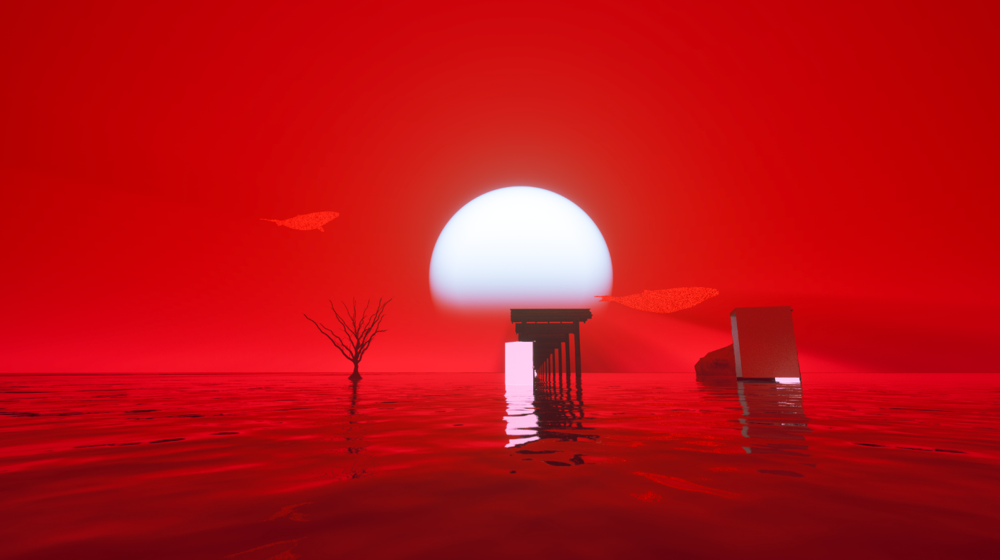
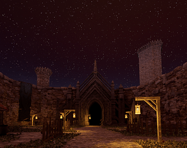

ALL PROJECTS

Grave Runner
A dual-variant UE5 game — Boss Rush (Diggers) and Boss Run (Runners). Built with a team in under a month, delivering two complete game variants.

Dissolution
A short first-person experience about exploration and mystery. Features unique level interactions and a narrative about a man coming to terms with his existence.

Sneaky Slumbers
Stealth game set in a dystopian orphanage. Evade security guards by pretending to sleep — a creative mechanic born from a university passion project.

HorrorHugger
Led a team of 6 to build a full story game about a King who must save his people. Features hand-crafted mazes and a unique hug-and-shove combat mechanic.

Walks on Your Skin
My UE5 origin project — a forest horror walking simulator built for DATT3300. This is where my love for Unreal began.

Bugzy Ninja
My first Unity game — a score-chasing runner where a ninja races to escape a giant bug. Where my game dev journey began.

Chopper's Rampage
My very first published game. A minimalist horror story built in Bitsy about a man haunted by a serial killer. Where it all started.